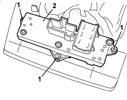

7040A62 SWITCH UNIT ON TUNNEL R R
- Path
- Procedures > 70 FITTINGS > 7040 BODY INTERIOR FITTINGS AND TRIM > 7040A PASSENGER COMPARTMENT TRIMS > 7040A62 SWITCH UNIT ON TUNNEL R R
- Kind
- repair procedure (removal / refitting; the operation number is the code)
- Applies to
- engines: 1.8, 2.2 JTS, 3.2 JTS, 1.9 JTD 8V, 1.9 JTD 16V, 2.4 JTD 20V; all production periods
- Interactive page
- https://sloeber94.github.io/elrnDB/#/939011242
Applies to: engines: 1.8, 2.2 JTS, 3.2 JTS, 1.9 JTD 8V, 1.9 JTD 16V, 2.4 JTD 20V; all production periods
 Removing
Removing
 Refitting
RefittingOp. 7040L37 GEAR LEVER TRIM - R.R
1. Undo the bolts.
2. Remove the switch unit.

Applies to: engines: 1.8, 2.2 JTS, 3.2 JTS, 1.9 JTD 8V, 1.9 JTD 16V, 2.4 JTD 20V; all production periods
Refitting
Removing- Check that the switch assembly is not damaged.
- Fit the switch assembly and tighten the bolts.